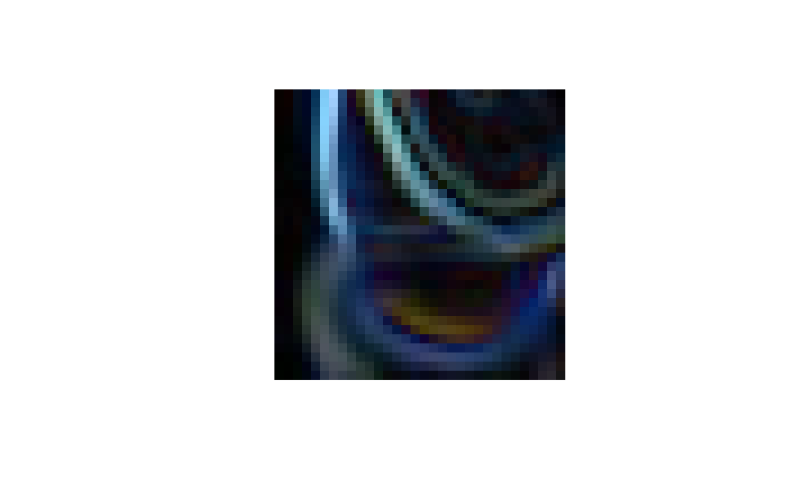

vignettes/Z3_detection.Rmd
Z3_detection.Rmd
sob1 = runSobel(ciftrain1k[4])## Loading required namespace: EBImageExtra
sob1## ImageArray instance with 1 images, each 32 x 32 x 3
## Image types: orange
## Array elements range from 0.000000 to 2.443000.
plotOne(sob1, transpose=TRUE, interpolate=FALSE)
What is an edge? How many edges have been found?
What kind of analysis of the numerical data underlying the image would be needed to count the edges?